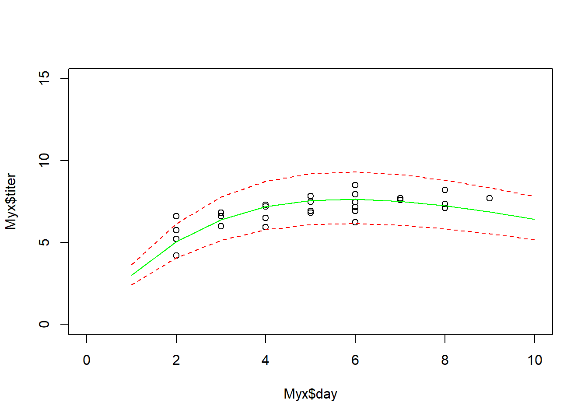

Model Performance Evaluation
NRES 746
November 9, 2016
In this course so far, we have constructed data-generating models and fitted these models to observed data using likelihood-based methods (ML and Bayesian inference). We also have explored a range of methods to account for structural uncertainty (which of a set of candidate models could plausibly have generated our observed data).
But even after we have fitted a model to data, even after we have compared a suite of plausible models and selected the best one, are we really sure that the model is good?
What does it even mean to say that the model is good?
Usually, we mean one or more of the following:
- Goodness-of-fit: The data could easily/reasonably have been generated under the best-fit model.
- Predictive ability: The model performs well at predicting observed responses that were not used to train the model.
- Generality: The model performs well at extrapolating responses for data that are qualitatively different from those in the training set.
Goodness-of-fit
We have already looked at a variety of methods for evaluating goodness-of-fit. In general, you can use data simulation (virtual ecology) to evaluate whether your fitted model is capable of generating the observed data.
For example, we can overlay the observed data on a cloud of points representing the range of data sets possibly produced under the fitted model. Or, we can use a “plug-in” prediction bounds as a substitute for the cloud of data sets possibly produced under the model.
Let’s return to the Myxomatosis dataset!
library(emdbook)
MyxDat <- MyxoTiter_sum
Myx <- subset(MyxDat,grade==1) #Data set from grade 1 of myxo data
head(Myx)## grade day titer
## 1 1 2 5.207
## 2 1 2 5.734
## 3 1 2 6.613
## 4 1 3 5.997
## 5 1 3 6.612
## 6 1 3 6.810Now let’s use ML to fit the Ricker model with a gamma error distribution.
Ricker <- function(a,b,predvar) a*predvar*exp(-b*predvar)
NegLogLik_func <- function(params,data){
expected <- Ricker(params[1],params[2],data$day)
-sum(dgamma(data$titer,shape=params[3],scale=expected/params[3],log = T))
}
init.params <- c(a=1,b=0.2,shape=50)
NegLogLik_func(init.params,data=Myx)## [1] 2336.22MaxLik <- optim(par=init.params, fn=NegLogLik_func, data=Myx)
MaxLik## $par
## a b shape
## 3.5614933 0.1713346 90.6790545
##
## $value
## [1] 29.50917
##
## $counts
## function gradient
## 202 NA
##
## $convergence
## [1] 0
##
## $message
## NULLHow might we evaluate goodness-of-fit in this case??
Plug-in prediction bounds
The simplest way is just to plot the expected value along with “plug-in” bounds around that prediction, to represent the range of data likely to be produced under the model. We have done this before!
plot(Myx$titer~Myx$day,xlim=c(0,10),ylim=c(0,15))
expected <- Ricker(MaxLik$par['a'],MaxLik$par['b'],1:10)
points(1:10,expected,type="l",col="green")
upper <- qgamma(0.975,shape=MaxLik$par['shape'],scale=expected/MaxLik$par['shape'])
lower <- qgamma(0.025,shape=MaxLik$par['shape'],scale=expected/MaxLik$par['shape'])
points(1:10,upper,type="l",col="red",lty=2)
points(1:10,lower,type="l",col="red",lty=2)
This gives us a simple and useful way to visualize goodness-of-fit.
Simulated datasets!
Alternatively, we could generate simulated data sets under the best-fit model:
plot(Myx$titer~Myx$day,xlim=c(0,10),ylim=c(0,15),type="n")
expected <- Ricker(MaxLik$par['a'],MaxLik$par['b'],1:10)
points(1:10,expected,type="l",col="green")
uniquedays <- sort(unique(Myx$day))
expected <- Ricker(MaxLik$par['a'],MaxLik$par['b'],uniquedays)
simdata <- array(0,dim=c(1000,length(uniquedays)))
for(i in 1:1000){
simdata[i,] <- rgamma(length(uniquedays),shape=MaxLik$par['shape'],scale=expected/MaxLik$par['shape'])
}
upper <- apply(simdata,2,function(t) quantile(t,0.975))
lower <- apply(simdata,2,function(t) quantile(t,0.025))
points(uniquedays,upper,type="l",col="red",lty=2)
points(uniquedays,lower,type="l",col="red",lty=2)
boxplot(x=as.list(as.data.frame(simdata)),at=uniquedays,add=T,boxwex=0.25,xaxt="n",range=0,col="red")
points(Myx$day,Myx$titer,cex=1.5,pch=20)
Using simulated data, we can go further- we can compare the simulated data vs the observed data more quantitatively. For example, we can compute the root mean squared error (RMSE) for the simulated datasets and compare that with the root mean squared error for the observed data.
expected <- Ricker(MaxLik$par['a'],MaxLik$par['b'],Myx$day)
simdata <- array(0,dim=c(1000,length(Myx$day)))
for(i in 1:1000){
simdata[i,] <- rgamma(length(Myx$day),shape=MaxLik$par['shape'],scale=expected/MaxLik$par['shape'])
}
rmse_observed <- sqrt(mean((Myx$titer-expected)^2))
rmse_simulated <- apply(simdata,1,function(t) mean((t-expected)^2))
hist(rmse_simulated,freq=F)
abline(v=rmse_observed,col="green",lwd=3)So, is this a good model?
Of course, the goodness-of-fit tests you can run with simulated data are limited only by your imagination! Be dangerous!
NOTE: the above methods do not account for parameter uncertainty. This model is the maximum likelihood model- that is, the point estimates are assumed to represent the true model!!
If we wanted to account for parameter uncertainty in the ML framework, we could (for example) use profile likelihood CIs to estimate parameter bounds and we could plug-in bounds that incorporate parameter uncertainty.
Bayesian!
Accounting for parameter uncertainty is simple in a Bayesian framework…
In general, a posterior predictive check involves generating new data under the fitted model and comparing with the observed data.
First we need to fit the model in JAGS.
Note that we can write the predictions directly into the JAGS code
library(R2jags)## Loading required package: rjags## Loading required package: coda## Linked to JAGS 4.2.0## Loaded modules: basemod,bugs##
## Attaching package: 'R2jags'## The following object is masked from 'package:coda':
##
## traceplotlibrary(lattice)
cat("
model {
#############
# LIKELIHOOD
############
for(obs in 1:n.observations){
expected[obs] <- a*day[obs]*exp(-b*day[obs]) # Ricker
titer[obs] ~ dgamma(shape,shape/expected[obs])
titer.sim[obs] ~ dgamma(shape,shape/expected[obs]) # simulate new data (accounting for parameter uncertainty!)
}
#############
# PRIORS
############
shape ~ dgamma(0.001,0.001)
a ~ dunif(0,10)
b ~ dunif(0,10)
#############
# SIMULATED DATA FOR VISUALIZATION
#############
for(day2 in 1:10){
expected.new[day2] <- a*day2*exp(-b*day2) # Ricker
titer.new[day2] ~ dgamma(shape,shape/expected.new[day2])
}
#############
# DERIVED QUANTITIES
#############
for(obs in 1:n.observations){
SE_obs[obs] <- pow(titer[obs]-expected[obs],2)
SE_sim[obs] <- pow(titer.sim[obs]-expected[obs],2)
}
RMSE_obs <- sqrt(mean(SE_obs[]))
RMSE_sim <- sqrt(mean(SE_sim[]))
}
", file="BUGSmod_ricker1.txt")Let’s run the model!
myx.data.for.bugs <- list(
titer = Myx$titer,
day = Myx$day,
n.observations = length(Myx$titer)
)
init.vals.for.bugs <- function(){
list(
shape=runif(1,20,100),
a=runif(1,0.5,1.5),
b=runif(1,0.1,0.3)
)
}
params.to.store <- c("shape","a","b","RMSE_obs","RMSE_sim","titer.new") # specify the parameters we want to get the posteriors for
jags.fit <- jags(data=myx.data.for.bugs,inits=init.vals.for.bugs,parameters.to.save=params.to.store,n.iter=50000,model.file="BUGSmod_ricker1.txt",n.chains = 3,n.burnin = 5000,n.thin = 20 )## module glm loaded## Compiling model graph
## Resolving undeclared variables
## Allocating nodes
## Graph information:
## Observed stochastic nodes: 27
## Unobserved stochastic nodes: 40
## Total graph size: 458
##
## Initializing modeljags.fit.mcmc <- as.mcmc(jags.fit)
posterior <- as.data.frame(jags.fit$BUGSoutput$sims.list)Assuming convergence, let’s move on to the goodness-of-fit part! First, let’s visualize the observed data against the cloud of data that could be produced under this model!
plot(Myx$titer~Myx$day,xlim=c(0,10),ylim=c(0,15),type="n")
expected <- Ricker(mean(posterior$a),mean(posterior$b),1:10)
points(1:10,expected,type="l",col="red")
boxplot(x=as.list(posterior[,7:16]),at=1:10,add=T,boxwex=0.25,xaxt="n",range=0,border="red")
points(Myx$day,Myx$titer,cex=1.5,pch=20)
Looks pretty good so far! Let’s look at another posterior predictive check…
plot(posterior$RMSE_sim~posterior$RMSE_obs, main="posterior predictive check")
abline(0,1,col="red",lwd=2)
p.value=length(which(as.vector(jags.fit.mcmc[,"RMSE_sim"][[1]])>as.vector(jags.fit.mcmc[,"RMSE_obs"][[1]])))/length(as.vector(jags.fit.mcmc[,"RMSE_sim"][[1]]))
p.value## [1] 0.6595556Okay, the fit seems more or less reasonable!
Predictive ability
In many cases, goodness-of-fit is not ultimately what we are most interested in. What we really want to know is whether the model does a good job at predicting the response variable.
One way to do this would be for us to focus on an R-squared or pseudo-R2 statistic:
\(R^2 = 1-\frac{SS_{res}}{SS_{tot}}\)
\(PseudoR^2 = 1-(\frac{logLik_{mod}}{logLik_{null}})\)
Let’s compute these metrics for the fitted data:
SS_res <- sum((Myx$titer-Ricker(MaxLik$par["a"],MaxLik$par["b"],Myx$day))^2)
SS_tot <- sum((Myx$titer-mean(Myx$titer))^2)
Rsquared <- 1-SS_res/SS_tot
cat("R-squared = ", Rsquared, "\n")## R-squared = 0.46578NegLogLik_null <- function(params){
-sum(dgamma(Myx$titer,shape=params[2],scale=params[1]/params[2],log = T))
}
init.params <- c(mean=7,shape=50)
MaxLik_null <- optim(par=init.params, fn=NegLogLik_null)
McFadden <- 1-(MaxLik$value/MaxLik_null$value)
cat("McFadden's R-squared = ", McFadden) ## McFadden's R-squared = 0.2165806Another way to evaluate model skill, or performance, is to use root mean squared error:
\(RMSE = sqrt(mean(residuals^2))\)
RMSE gives a good indicator of the mean error rate, which is often useful and interpretable in an absolute way. For example, the modeled temperature is usually within 1.3 degrees C of the true temperature…
RMSE = sqrt(mean((Myx$titer-Ricker(MaxLik$par["a"],MaxLik$par["b"],Myx$day))^2))
cat("RMSE = ", RMSE, "\n")## RMSE = 0.6767347So is our model good???
Does it really do a good job at prediction? Is the model over-fitted?
Validation
Let’s imagine we collect some new Myxomatosis titer data, and it looks like this:
newdata <- data.frame(
grade = 1,
day = c(2,3,4,5,6,7,8),
titer = c(4.4,7.2,6.8,5.9,9.1,8.3,8.8)
)
newdata## grade day titer
## 1 1 2 4.4
## 2 1 3 7.2
## 3 1 4 6.8
## 4 1 5 5.9
## 5 1 6 9.1
## 6 1 7 8.3
## 7 1 8 8.8First we might simply visualize the new data against the cloud of data possibly produced under the fitted model…
plot(Myx$titer~Myx$day,xlim=c(0,10),ylim=c(0,15),type="n",xlab="days",ylab="titer")
expected <- Ricker(MaxLik$par['a'],MaxLik$par['b'],1:10)
points(1:10,expected,type="l",col="green")
expected <- Ricker(MaxLik$par['a'],MaxLik$par['b'],1:10)
simdata <- array(0,dim=c(1000,10))
for(i in 1:1000){
simdata[i,] <- rgamma(10,shape=MaxLik$par['shape'],scale=expected/MaxLik$par['shape'])
}
upper <- apply(simdata,2,function(t) quantile(t,0.975))
lower <- apply(simdata,2,function(t) quantile(t,0.025))
points(1:10,upper,type="l",col="green",lty=2)
points(1:10,lower,type="l",col="green",lty=2)
boxplot(x=as.list(as.data.frame(simdata)),at=1:10,add=T,boxwex=0.25,xaxt="n",range=0,border="green")
points(newdata$day,newdata$titer,cex=1.5,pch=20,col="red")
points(Myx$day,Myx$titer,cex=1.5,pch=20,col="black")
legend("topleft",pch=c(20,20),col=c("black","red"),legend=c("original data","validation data"))
Now let’s evaluate the skill of our model at predicting the new data… using our above measures of skill, or performance.
SS_res <- sum((newdata$titer-Ricker(MaxLik$par["a"],MaxLik$par["b"],newdata$day))^2)
SS_tot <- sum((newdata$titer-mean(newdata$titer))^2)
Rsquared_validation <- 1-SS_res/SS_tot
cat("R-squared = ", Rsquared, "\n")## R-squared = 0.46578expected <- Ricker(MaxLik$par["a"],MaxLik$par["b"],newdata$day)
McFadden_validation <- 1-(sum(dgamma(newdata$titer,shape=MaxLik$par["shape"],scale=expected/MaxLik$par["shape"], log = T))/sum(dgamma(newdata$titer,shape=MaxLik_null$par["shape"],scale=MaxLik_null$par["mean"]/MaxLik_null$par["shape"],log=T)))
cat("pseudo R-squared = ", McFadden_validation, "\n")## pseudo R-squared = 0.2275702RMSE = sqrt(mean((newdata$titer-Ricker(MaxLik$par["a"],MaxLik$par["b"],newdata$day))^2))
cat("RMSE = ", RMSE, "\n")## RMSE = 1.144803The above analyses seem to indicate that the model fits the new data well, and that the model is successfully able to explain some of the variation in the new data.
Generality/extrapolation
Imagine we collect some more new data, this time in which titers are measured from day 10 to 16. Let’s see if the model does a good job now!
newdata <- data.frame(
grade = 1,
day = c(10,11,12,13,14,15,16),
titer = c(6.8,8.0,4.5,3.1,2.7,1.2,0.04)
)
newdata## grade day titer
## 1 1 10 6.80
## 2 1 11 8.00
## 3 1 12 4.50
## 4 1 13 3.10
## 5 1 14 2.70
## 6 1 15 1.20
## 7 1 16 0.04As before, let’s first simply visualize the new data against the cloud of data possibly produced under the fitted model…
plot(Myx$titer~Myx$day,xlim=c(0,20),ylim=c(0,15),type="n",xlab="days",ylab="titer")
expected <- Ricker(MaxLik$par['a'],MaxLik$par['b'],1:20)
points(1:20,expected,type="l",col="green")
expected <- Ricker(MaxLik$par['a'],MaxLik$par['b'],1:20)
simdata <- array(0,dim=c(1000,20))
for(i in 1:1000){
simdata[i,] <- rgamma(20,shape=MaxLik$par['shape'],scale=expected/MaxLik$par['shape'])
}
upper <- apply(simdata,2,function(t) quantile(t,0.975))
lower <- apply(simdata,2,function(t) quantile(t,0.025))
points(1:20,upper,type="l",col="green",lty=2)
points(1:20,lower,type="l",col="green",lty=2)
boxplot(x=as.list(as.data.frame(simdata)),at=1:20,add=T,boxwex=0.25,xaxt="n",range=0,border="green")
points(newdata$day,newdata$titer,cex=1.5,pch=20,col="red")
points(Myx$day,Myx$titer,cex=1.5,pch=20,col="black")
legend("topleft",pch=c(20,20),col=c("black","red"),legend=c("original data","new data"))
Now let’s evaluate the skill of our model at predicting the withheld data… using our favorite measures of skill, or performance.
SS_res <- sum((newdata$titer-Ricker(MaxLik$par["a"],MaxLik$par["b"],newdata$day))^2)
SS_tot <- sum((newdata$titer-mean(newdata$titer))^2)
Rsquared_validation <- 1-SS_res/SS_tot
cat("R-squared = ", Rsquared, "\n")## R-squared = 0.46578expected <- Ricker(MaxLik$par["a"],MaxLik$par["b"],newdata$day)
McFadden_validation <- 1-(sum(dgamma(newdata$titer,shape=MaxLik$par["shape"],scale=expected/MaxLik$par["shape"], log = T))/sum(dgamma(newdata$titer,shape=MaxLik_null$par["shape"],scale=MaxLik_null$par["mean"]/MaxLik_null$par["shape"],log=T)))
cat("pseudo R-squared = ", McFadden_validation, "\n")## pseudo R-squared = -0.3697861RMSE = sqrt(mean((newdata$titer-Ricker(MaxLik$par["a"],MaxLik$par["b"],newdata$day))^2))
cat("RMSE = ", RMSE, "\n")## RMSE = 2.196227Interestingly, this example shows a couple things:
1) The model was very poor at extrapolating.
2) The R-squared isn’t always the best measure of model performance.
3) The McFadden pseudo-Rsquared can go below 0!
Cross-validation
In many cases, you will not have new data against which to test the model. Cross-validation allows us to test the model anyway. Here is some pseudocode:
- Partition the data into k partitions
- Fit the model, leaving one data partition out at a time
- loop through the partitions.
- for each iteration of the loop, fit the model to all the data EXCEPT the observations in this partition
- use this new fitted model to predict the response variable for all observations in this partition
- loop through the partitions.
- Compute overall model performance for the cross-validation!
The most common forms of cross-validation are: (1) leave-one-out (jackknife) and (10-fold)
Let’s go through an example using the Myxomatosis data!
#####
# PARTITION THE DATA
####
n.folds <- nrow(Myx) # jackknife
Myx$fold <- sample(c(1:n.folds),size=nrow(Myx),replace=FALSE)
init.params <- c(a=1,b=0.2,shape=50)
Myx$pred_CV <- 0
for(i in 1:n.folds){
Myx2 <- subset(Myx,fold!=i) # observations to use for fitting
newfit <- optim(par=init.params, fn=NegLogLik_func, data=Myx2) # fit the model, leaving out this partition
ndx <- Myx$fold == i
Myx$pred_CV[ndx] <- Ricker(newfit$par['a'],newfit$par['b'],Myx$day[ndx])
}
Myx$pred_full <- Ricker(MaxLik$par['a'],MaxLik$par['b'],Myx$day)
Myx## grade day titer fold pred_CV pred_full
## 1 1 2 5.207 18 5.037240 5.056415
## 2 1 2 5.734 12 4.964784 5.056415
## 3 1 2 6.613 3 4.848091 5.056415
## 4 1 3 5.997 19 6.421393 6.390345
## 5 1 3 6.612 27 6.372576 6.390345
## 6 1 3 6.810 4 6.356336 6.390345
## 7 1 4 5.930 13 7.239066 7.178825
## 8 1 4 6.501 24 7.210826 7.178825
## 9 1 4 7.182 14 7.179047 7.178825
## 10 1 4 7.292 5 7.173159 7.178825
## 11 1 5 7.819 8 7.550076 7.560555
## 12 1 5 7.489 10 7.562292 7.560555
## 13 1 5 6.918 22 7.585407 7.560555
## 14 1 5 6.808 16 7.589677 7.560555
## 15 1 6 6.235 25 7.710027 7.644080
## 16 1 6 6.916 23 7.678921 7.644080
## 17 1 2 4.196 15 5.170366 5.056415
## 18 1 9 7.682 7 6.680056 6.857841
## 19 1 8 8.189 9 7.113403 7.235101
## 20 1 7 7.707 21 7.500069 7.513847
## 21 1 7 7.597 26 7.506437 7.513847
## 22 1 8 7.112 20 7.251935 7.235101
## 23 1 8 7.354 6 7.221209 7.235101
## 24 1 6 7.158 1 7.666217 7.644080
## 25 1 6 7.466 2 7.651439 7.644080
## 26 1 6 7.927 17 7.630461 7.644080
## 27 1 6 8.499 11 7.602640 7.644080To assess how well the model is performing, let’s compute the root mean squared error for the full model vs the cross-validation:
RMSE_full <- sqrt(mean((Myx$titer-Myx$pred_full)^2))
RMSE_CV <- sqrt(mean((Myx$titer-Myx$pred_CV)^2))
RMSE_full## [1] 0.6767347RMSE_CV## [1] 0.7374805As expected, the RMSE is higher under cross-validation.
Is the model still okay? One way to look at this would be to assess the variance explained.
VarExplained_full = 1 - mean((Myx$titer-Myx$pred_full)^2)/mean((Myx$titer-mean(Myx$titer))^2)
VarExplained_CV = 1 - mean((Myx$titer-Myx$pred_CV)^2)/mean((Myx$titer-mean(Myx$titer))^2)
VarExplained_full## [1] 0.46578VarExplained_CV## [1] 0.3655692Clearly the model performance is lower for the cross-validation, and usually will be! But this is also a more honest evaluation of model performance.
Example: multiple logistic regression
NOTE: example modified from here
Let’s evaluate which factors were related to surviving the titanic disaster!
titanic <- read.csv("titanic.csv",header=T)
head(titanic)## PassengerId Survived Pclass
## 1 1 0 3
## 2 2 1 1
## 3 3 1 3
## 4 4 1 1
## 5 5 0 3
## 6 6 0 3
## Name Sex Age SibSp
## 1 Braund, Mr. Owen Harris male 22 1
## 2 Cumings, Mrs. John Bradley (Florence Briggs Thayer) female 38 1
## 3 Heikkinen, Miss. Laina female 26 0
## 4 Futrelle, Mrs. Jacques Heath (Lily May Peel) female 35 1
## 5 Allen, Mr. William Henry male 35 0
## 6 Moran, Mr. James male NA 0
## Parch Ticket Fare Cabin Embarked
## 1 0 A/5 21171 7.2500 S
## 2 0 PC 17599 71.2833 C85 C
## 3 0 STON/O2. 3101282 7.9250 S
## 4 0 113803 53.1000 C123 S
## 5 0 373450 8.0500 S
## 6 0 330877 8.4583 QOur goal is to model the probability of surviving the titanic disaster as a function of covariates like sex, age, number of siblings or spouses onboard, number of parents or children, passenger fare, etc.
Let’s first build a simple logistic regression model for this problem.
model1 <- glm(Survived ~ Sex + SibSp + Parch + Fare, data=titanic, family="binomial")
summary(model1)##
## Call:
## glm(formula = Survived ~ Sex + SibSp + Parch + Fare, family = "binomial",
## data = titanic)
##
## Deviance Residuals:
## Min 1Q Median 3Q Max
## -2.2371 -0.6229 -0.5964 0.7498 2.4891
##
## Coefficients:
## Estimate Std. Error z value Pr(>|z|)
## (Intercept) 0.946635 0.169354 5.590 2.28e-08 ***
## Sexmale -2.642219 0.186114 -14.197 < 2e-16 ***
## SibSp -0.353892 0.098185 -3.604 0.000313 ***
## Parch -0.200724 0.112037 -1.792 0.073200 .
## Fare 0.014685 0.002644 5.553 2.80e-08 ***
## ---
## Signif. codes: 0 '***' 0.001 '**' 0.01 '*' 0.05 '.' 0.1 ' ' 1
##
## (Dispersion parameter for binomial family taken to be 1)
##
## Null deviance: 1186.66 on 890 degrees of freedom
## Residual deviance: 859.04 on 886 degrees of freedom
## AIC: 869.04
##
## Number of Fisher Scoring iterations: 5Alternatively, we could write our own likelihood function!!
params <- c(
int=1,
male = -3,
sibsp = 0,
parch = 0,
fare = 0.02
)
LikFunc <- function(params){
linear <- params['int'] +
params['male']*as.numeric(titanic$Sex=="male") +
params['sibsp']*titanic$SibSp +
params['parch']*titanic$Parch +
params['fare']*titanic$Fare
logitlinear <- 1/(1+exp(-(linear)))
-sum(dbinom(titanic$Survived,size=1,prob = logitlinear,log=T))
}
LikFunc(params)## [1] 457.3548MLE <- optim(fn=LikFunc,par = params)
MLE$par## int male sibsp parch fare
## 1.00192952 -2.68340590 -0.37983132 -0.23729121 0.01494866Interesting- the results are very slightly different from the glm results…!
Since we are interested in evaluating model performance, let’s see how well the model predicts which people survived the titanic disaster…
BUT… since the response is binary, our model skill metrics don’t really work too well!
For binary responses, the ROC curve is a good way of evaluating model performance!
library(ROCR)
library(rms)
###################################
#################### CROSS VALIDATION CODE
n.folds = 10
foldVector = rep(c(1:n.folds),times=floor(length(titanic$Survived)/9))[1:length(titanic$Survived)]
#n.folds = length(titanic$resp_factor)
#foldVector <- c(1:length(titanic$resp_factor))
counter = 1
CVprediction <- numeric(nrow(titanic))
CVobserved <- numeric(nrow(titanic))
realprediction <- numeric(nrow(titanic))
realdata <- numeric(nrow(titanic))
counter=1
#test <- numeric(nrow(titanic))
for(i in 1:n.folds){
model <- glm(formula = Survived ~ Sex + SibSp + Parch + Fare, family = "binomial", data = titanic[which(foldVector!=i),])
predict_CV <- plogis(predict(model,newdata=titanic[which(foldVector==i),]))
predict_real <- plogis(predict(model1,newdata=titanic[which(foldVector==i),]))
REAL <- titanic$Survived[which(foldVector==i)]
for(j in 1:length(which(foldVector==i))){
CVprediction[counter] <- predict_CV[j]
CVobserved[counter] <- REAL[j]
realprediction[counter] <- predict_real[j]
realdata[counter] <- REAL[j]
counter = counter + 1
}
}
CV_RMSE = sqrt(mean((CVobserved-CVprediction)^2)) # root mean squared error for holdout samples in 10-fold cross-validation ...
real_RMSE = sqrt(mean((CVobserved-realprediction)^2)) # root mean squared error for residuals from final model
# print RMSE statistics
CV_RMSE ## [1] 0.3983029real_RMSE ## [1] 0.3937799par(mfrow=c(2,1))
pred <- prediction(CVprediction,CVobserved) # for holdout samples in cross-validation
perf <- performance(pred,"tpr","fpr")
auc <- performance(pred,"auc")
plot(perf)
text(.9,.1,paste("AUC = ",round(auc@y.values[[1]],2),sep=""))
pred <- prediction(realprediction,CVobserved) # for final model
perf <- performance(pred,"tpr","fpr")
auc <- performance(pred,"auc")
plot(perf)
text(.9,.1,paste("AUC = ",round(auc@y.values[[1]],2),sep=""))
### display confusion matrix and kappa for a single threshold
cutoff = 0.5
trueLabels <- CVobserved
predLabels <- ifelse(CVprediction>=cutoff,1,0)
tot <- length(CVobserved)
tp <- length(which((trueLabels==1)&(predLabels==1)))
tn <- length(which((trueLabels==0)&(predLabels==0)))
fp <- length(which((trueLabels==0)&(predLabels==1)))
fn <- length(which((trueLabels==1)&(predLabels==0)))
pr_agree <- (tp+tn)/tot # overall agreement, or accuracy
pr_agree_rand <- ((tp+fn)/tot)*((tp+fp)/tot)+((fn+tn)/tot)*((fp+tn)/tot)
kappa <- (pr_agree-pr_agree_rand)/(1-pr_agree_rand)
kappa## [1] 0.5410852matrix(c(tp,fp,fn,tn),nrow=2,ncol=2)## [,1] [,2]
## [1,] 231 111
## [2,] 79 470sensitivity <- tp/(tp+fn)
specificity <- tn/(tn+fp)
toterror <- (fn+fp)/tot
sensitivity## [1] 0.6754386specificity## [1] 0.856102toterror## [1] 0.2132435CVprediction[which(CVprediction==1)] <- 0.9999
CVprediction[which(CVprediction==0)] <- 0.0001
realprediction[which(realprediction==1)] <- 0.9999
realprediction[which(realprediction==0)] <- 0.0001
realdata = CVobserved
fit_deviance_CV <- mean(-2*(dbinom(CVobserved,1,CVprediction,log=T)-dbinom(realdata,1,realdata,log=T)))
fit_deviance_real <- mean(-2*(dbinom(CVobserved,1,realprediction,log=T)-dbinom(realdata,1,realdata,log=T)))
null_deviance <- mean(-2*(dbinom(CVobserved,1,mean(CVobserved),log=T)-dbinom(realdata,1,realdata,log=T)))
deviance_explained_CV <- (null_deviance-fit_deviance_CV)/null_deviance # based on holdout samples
deviance_explained_real <- (null_deviance-fit_deviance_real)/null_deviance # based on full model...
deviance_explained_CV## [1] 0.2564415deviance_explained_real## [1] 0.2760832NEXT: do the same analysis with Random Forest…